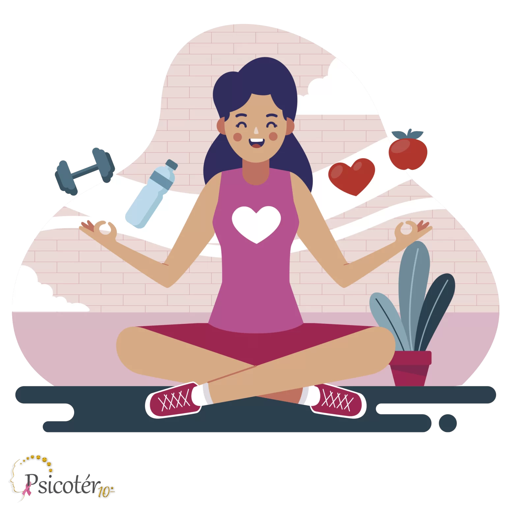

Tipos de Autocuidado
Autocuidado Físico: Higiene Pessoal: Manter uma rotina de higiene adequada. Alimentação: Comer de forma equilibrada e nutritiva. Exercício Físico: Praticar atividades físicas regularmente. Sono: Garantir uma quantidade adequada e qualidade de sono.
Autocuidado Emocional: Reconhecimento das Emoções: Identificar e aceitar seus sentimentos. Gerenciamento do Estresse: Praticar técnicas de relaxamento como meditação e respiração. Tempo para Si Mesmo: Dedicar momentos para atividades que tragam prazer e relaxamento.
Autocuidado Mental: Desafios Cognitivos: Engajar-se em atividades que estimulem o cérebro, como quebra-cabeças ou jogos mentais. Definição de Metas: Estabelecer objetivos pessoais e profissionais e trabalhar para alcançá-los.
Autocuidado Social: Relacionamentos Saudáveis: Cultivar e manter relações positivas e significativas. Conexão Social: Participar de atividades sociais e manter contato com amigos e família. Limitação de Relações Tóxicas: Distanciar-se de pessoas que causam estresse ou prejudicam seu bem-estar.
